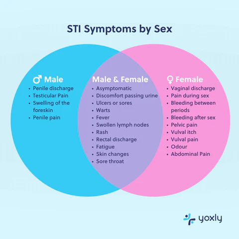
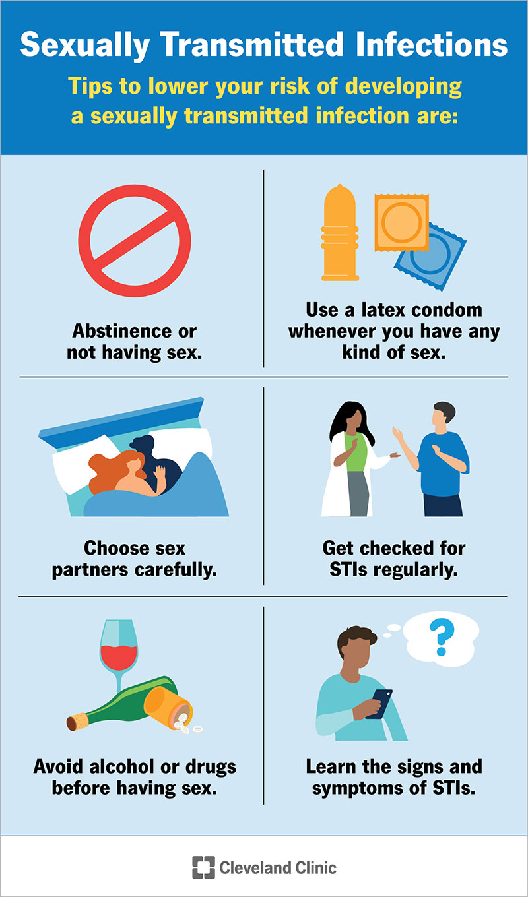
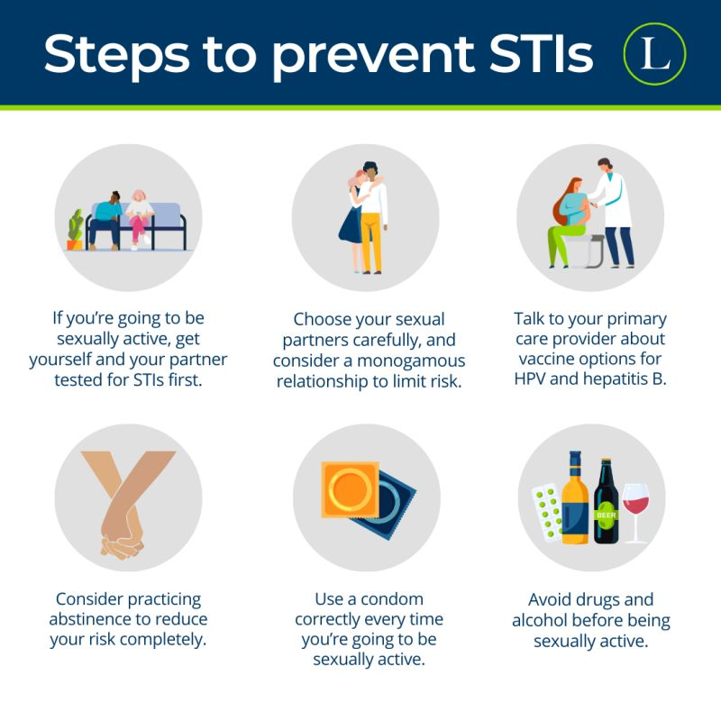

1M+
STIs are acquired every day worldwide (WHO estimate).
Health Education Blog
The Invisible Reality of STIs: Understanding prevention, data, and the truth.
STIs are acquired every day worldwide (WHO estimate).
Nearly half of new STI cases occur among ages 15-24 in many reports.
A lot of infections have no obvious symptoms, so testing matters.
STIs are commonly grouped by what causes them. This visual guide shows the three major categories.
Includes chlamydia and gonorrhea. Early diagnosis usually allows effective antibiotic treatment.
Includes HPV, HIV, and herpes. Many cases are manageable long-term with medical care.
Trichomoniasis is a common example. Screening and treatment reduce spread and complications.
Health tip: If you are sexually active, ask a clinician which tests are right for your age and risk profile.
Symptoms vary widely. Many people have mild or no symptoms, so visual signs alone are not enough.


Get tested promptly and talk to a healthcare provider for the right diagnosis and treatment plan.
Seek urgent care for severe pelvic pain, fever, painful swelling, or pregnancy-related symptoms. Early care can prevent complications.
Health tip: Schedule annual STI screening, or sooner when you have a new partner or any symptoms.
Clear facts help reduce stigma and encourage timely testing.
You can tell if someone has an STI just by looking.
Many infections show no visible signs. Testing is the only reliable way to know.
You can easily catch most STIs from public toilet seats.
Most STI-causing organisms do not survive long on surfaces. Direct sexual contact is the primary route.
Once treated, you are immune forever.
You can be reinfected. Treatment addresses the current infection, not lifelong immunity.
Health tip: Replace assumptions with testing and trusted medical guidance.
A strong prevention plan combines communication, protection, regular testing, and vaccination.

Discuss testing history and boundaries with partners.
Use condoms or dental dams correctly and consistently.
Get screened regularly, including when no symptoms are present.
Stay updated on vaccines such as HPV and Hepatitis B.
Visual explainers support safer habits, informed decisions, and myth-busting.
